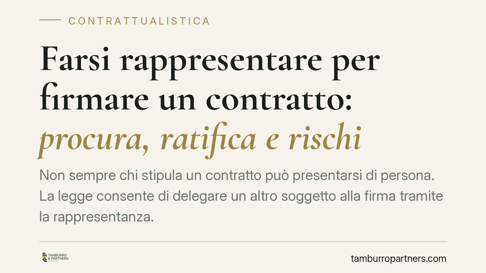

Farsi rappresentare per firmare un contratto: procura, ratifica e rischi
Non sempre chi stipula un contratto può presentarsi di persona. La legge consente di delegare un altro soggetto alla firma tramite la rappresentanza. Ma servono regole precise: una procura valida, la forma corretta e la consapevolezza dei rischi se il delegato agisce oltre i propri poteri. Ecco cosa prevede il Codice Civile e come muoversi senza esporsi a contestazioni.

Cos'è la rappresentanza
La rappresentanza è lo strumento con cui un soggetto, il rappresentante, compie un atto giuridico in nome e per conto di un altro, il rappresentato. Gli effetti dell'atto ricadono direttamente su quest'ultimo, come se avesse firmato di persona.
È una figura quotidiana: l'amministratore che stipula per la società, il coniuge che firma per l'altro con delega, il professionista incaricato di concludere una compravendita. In tutti questi casi chi firma non agisce per sé, ma per un altro che resta il vero titolare del rapporto.
Inquadramento normativo
L'art. 1387 c.c. distingue due fonti del potere di rappresentanza: la legge (rappresentanza legale, come quella dei genitori sui figli minori) e la volontà dell'interessato (rappresentanza volontaria, conferita con la procura).
La procura è l'atto con cui si attribuisce il potere di rappresentare. Un principio spesso trascurato è quello dell'art. 1393 c.c.: il terzo contraente può sempre esigere che il rappresentante giustifichi i propri poteri e, se la rappresentanza risulta da un atto scritto, ne consegni copia firmata. Chi conclude un contratto con un delegato ha quindi il diritto di verificare la procura prima di firmare.
Sul piano della forma vale una regola precisa: la procura deve avere la stessa forma richiesta per il contratto da concludere. Se il contratto va stipulato per atto pubblico o scrittura privata autenticata — come nella compravendita immobiliare — anche la procura deve rispettare quella forma. Una procura semplice non basta a firmare validamente un rogito notarile.
Cosa accade se il rappresentante eccede i poteri
Il nodo più delicato riguarda chi firma senza avere il potere di farlo, o andando oltre i limiti della procura. L'art. 1398 c.c. disciplina il cosiddetto falsus procurator, il falso rappresentante.
In questi casi il contratto non produce effetti nella sfera del rappresentato, che non è vincolato. Il terzo contraente in buona fede, cioè chi ha ragionevolmente confidato nell'esistenza dei poteri, può chiedere al falso rappresentante il risarcimento del danno subìto per aver fatto affidamento sulla validità del contratto.
Esiste però una via di salvezza: la ratifica. Il rappresentato può approvare a posteriori l'operato di chi ha agito senza poteri. La ratifica ha effetto retroattivo e sana il contratto, che diventa efficace come se fosse stato concluso da un rappresentante regolarmente investito. La ratifica deve rispettare la stessa forma prescritta per il contratto ratificato.
Implicazioni pratiche
Per chi vuole delegare la firma, il rischio principale è redigere una procura generica o carente nella forma: il contratto potrebbe rivelarsi inefficace o contestabile.
Per chi contratta con un delegato, il pericolo è concludere l'affare senza verificare i poteri, esponendosi a un contratto che non vincola il presunto rappresentato. In quel caso l'unica tutela sarebbe l'azione risarcitoria verso il falso rappresentante, spesso meno solvibile del soggetto per cui diceva di agire.
La gestione corretta della procura non è un formalismo: incide direttamente sulla validità dell'operazione e sulla possibilità di far valere il contratto.
Cosa fare in concreto
- Definite i poteri per iscritto. Indicate con precisione l'oggetto del contratto, i limiti di prezzo e le condizioni entro cui il delegato può agire.
- Verificate la forma richiesta. Se il contratto esige atto pubblico o scrittura autenticata, conferite la procura nella medesima forma davanti al notaio.
- Chiedete la procura al delegato. Se contrattate con un rappresentante, esigete copia scritta dei poteri prima di firmare, come consente l'art. 1393 c.c.
- Datate e limitate nel tempo la delega. Una procura senza scadenza può essere usata oltre le vostre intenzioni: prevedete un termine o revocatela per iscritto.
- In caso di dubbio sui poteri, sospendete. Meglio richiedere una ratifica formale prima di dare esecuzione al contratto che scoprirne l'inefficacia in seguito.
Consigliamo di far predisporre e verificare procure e ratifiche con l'assistenza di un legale, soprattutto per operazioni di valore o soggette a forma vincolata.
---
*Contributo informativo a cura di Tamburro & Partners - Avv. Giuseppe Tamburro. Non costituisce parere legale.*
Ogni contratto ha il suo equilibrio.
Se vuoi una revisione delle clausole o una redazione su misura, scrivi allo studio. Ti rispondiamo entro un giorno lavorativo.